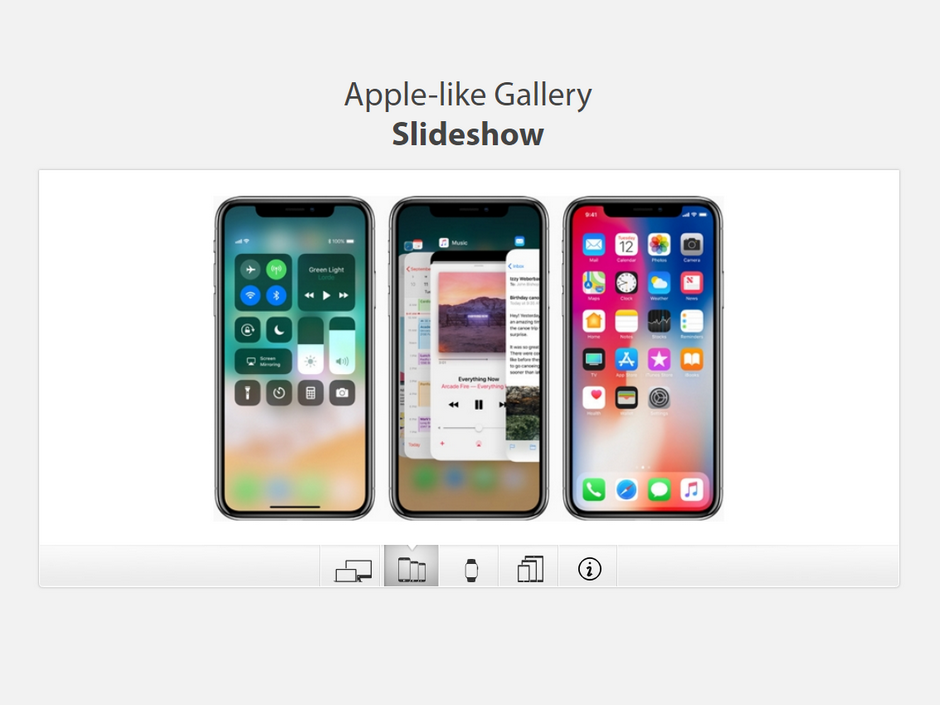
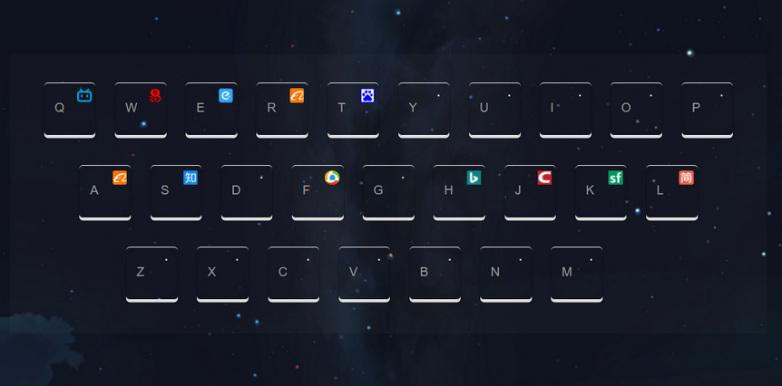

RS
card
关于
技能
作品
作品1
作品2
作品3
博客
博客1
博客2
博客3
日历
联系方式
其他
Hello
Liky
前端开发工程师
年龄
21
所在城市
杭州
邮箱
1123239490@qq.com
手机
15640202508
下载 PDF 简历
Liky ，Web前端求职者 ，辽宁大学本科大四在读。
技能：前端开发，Vue.js 开发，Node.js 开发
技能
HTML 5 & CSS 3
JavaScript
jQuery
Vue.js
React.js
Node.js
作品集
所有
框架
原生JS&CSS


发表留言
说句话吧~
昵称